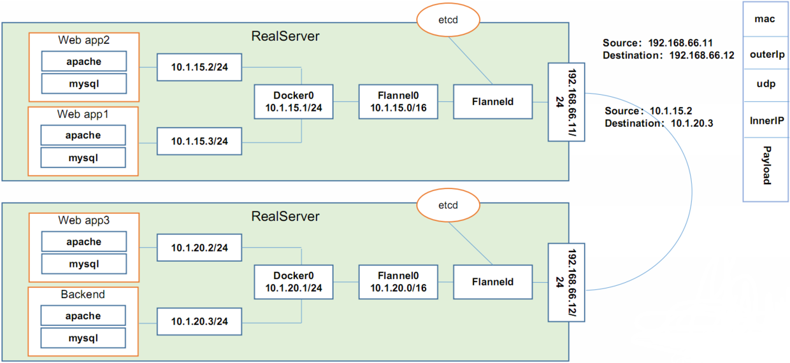

Pod概念
ReplicationController & ReplicaSet & Deployment
ReplicationController用来确保容器应用的副本数始终保持在用户定义的副本数,即如果有容器异常退出,会自动创建新的pod来替代;而如果异常多出来的容器也会自动回收.新版本的Kubernetes中建议使用ReplicaSet来取代ReplicationController
ReplicaSet跟ReplicationController没有本质的不同,只是名字不一样,并且ReplicaSet支持集合式的selector
虽然ReplicaSet可以独立使用,但一般还是建议使用Deployment来自动管理ReplicaSet,这样就无须担心跟其他机制的不兼容问题
Deployment
Deployment为Pod和ReplicaSet提供了一个声明式定义方法,用来替代以前的ReplicationController来方便的管理应用.典型的应用场景包括 :
- 定义Deployment来创建Pod和ReplicaSet
- 滚动升级和回滚应用
- 扩容和缩容
- 暂停和继续Deplyment
HPA(HorizontalPodAutoScale)
HorizontalPodAutoScale Pod Autoscaling仅适用于Deployment和ReplicaSet,在V1版本中仅支持根据Pod的CPU利用率扩缩容,在v1alpha版本中,支持根据内存和用户自定义的metric扩缩容
StatefulSet
StatefulSet是为了解决有状态服务的问题,其应用场景包括 :
- 稳定的持久化存储,即pod重新调度后还是能访问到相同的持久化数据,基于PVC来实现
- 稳定的网络标志,即pod重新调度后其podName和HostName不变,基于Headless Service来实现
- 有序部署,有序扩展,即Pod是有顺序的,再部署或者扩展的时候要一句定义的顺序依次进行,基于init containers来实现
- 有序收缩,有序删除
DaemonSet
DaemonSet确保全部Node上运行一个pod的副本.当有Node加入集群时,也会为他们新增一个pod.当有Node从集群移除时,这些pod也会被回收.删除DaemonSet将会删除它创建的所有pod
使用DaemonSet的一些典型用法 :
- 运行集群存储daemon,例如在每个Node上运行glusterd,ceph
- 在每个Node上运行日志收集daemon,例如fluentd,logstash
- 在每个Node上运行监控daemon,例如Prometheus Node Exporter
Job,Cronjob
Job负责批处理任务,即仅执行一次的任务,它保证批处理任务的一个或多个pod成功结束
Cron Job管理基于时间的Job,即 :
- 在给定时间点只运行一次
- 周期性地在给定时间点运行
网络通讯方式
网络通讯模式
Kubernetes的网络模型假定了所有pod都在一个可以直接连通的扁平的网络空间中,这在GCE里面是现成的网络模型,Kubernetes假定这个网络已经存在.而在私有云里搭建Kubernetes集群,就不能假定这个网络已经存在了.我们需要自己实现这个网络假设,将不同节点上的Docker容器之间的互相访问先打通,然后运行Kubernetes
同一个pod内的多个容器之间 : lo
各pod之间的通讯 : Overlay Network
pod与service之间的通讯 : 各节点的Iptables规则
网络解决方案 Kubernetes+Flannel
Flannel是CoreOS团队针对Kubernetes设计的一个网络规划服务,简单来说,它的功能是让集群中的不同节点主机创建的Docker容器都具有全集群唯一的虚拟IP地址.而且它还能在这些IP地址之间建立一个覆盖网络,通过这个覆盖网络,将数据包原封不动地传递到目标容器内

ETCD之Flannel提供说明 :
- 存储管理Flannel可分配的IP地址段资源
- 监控ETCD中每个pod的实际地址,并在内存中建立维护pod节点路由表
不同情况下网络通信方式
同一个pod内部通讯 : 同一个pod共享同一个网络命名空间,共享同一个Linux协议栈
pod1至pod2
- pod1与pod2不在同一台主机,pod的地址是与docker0在同一个网段的,但docker0网段与宿主机网卡是两个完全不同的IP网段,并且不同Node之间的通信只能通过宿主机的物理网卡进行.将Pod的IP和所在Node的IP关联起来,通过这个关联让Pod可以互相访问
- pod1与pod2在同一台机器,有Docker0网桥直接转发请求至pod2,不需要经过Flannel
Pod至Service的网络 : 目前基于性能考虑,全部为iptables维护和转发
Pod到外网 : Pod向外网发送请求,查找路由表,转发数据包到宿主机的网卡,宿主网卡完成路由选择后,iptables执行Masquerade,把源IP更改为宿主网卡的IP.然后向外网服务器发送请求
外网访问pod : Service